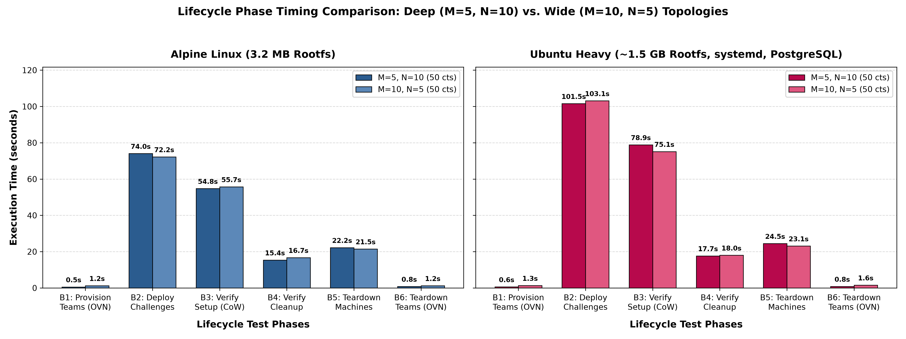
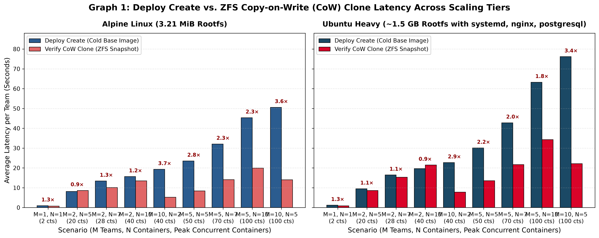
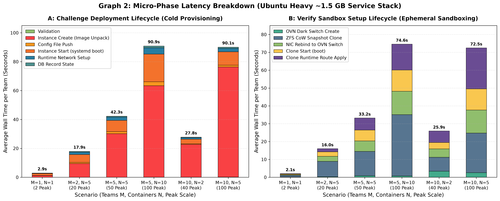
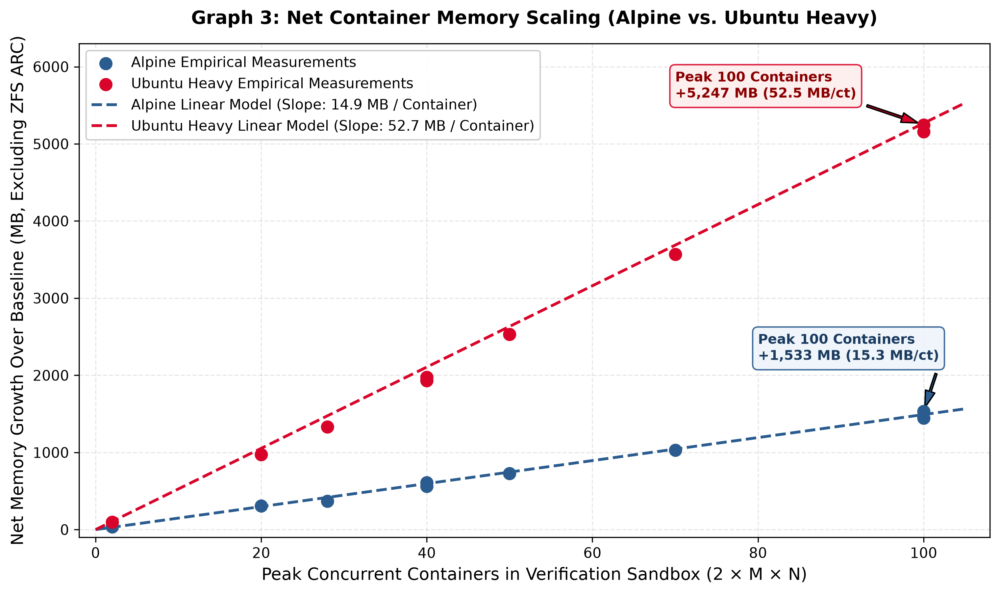

Corso di Laurea in Ingegneria Informatica
BlueAgent
BlueAgent: Orchestratore per CTF di Difesa
Contesto e Obiettivi
Contesto: gestione di CTF orientate alla Difesa (la flag si ottiene patchando e mettendo in sicurezza la vulnerabilità).
Requisiti chiave:
- Gestire una o più macchine comunicanti (scenari multi-nodo).
- Determinare lo stato delle macchine all'oscuro dei giocatori.
- Preservare l'operatività dei servizi legittimi dopo le patch.
Soluzione e Implementazione
La soluzione, BlueAgent: Orchestratore su singolo host, scritto in Python e basato sul framework FastAPI.
- Gestisce system container (Incus) con pieno accesso root e init reale.
- Verifica le patch clonando i container in un ambiente di rete separato e trasparente.
- Validazione: misurazione dei tempi di esecuzione e dell'uso di CPU e RAM al crescere di team e container.
Cyber Range Alternativi: kCTF e CTFBox
kCTF (Google)
- Basato su cluster Kubernetes e NSJail.
- Un unico container condiviso: ad ogni connessione esegue un fork con filesystem in RAM (
tmpfs). - Orientato prevalentemente a challenge di tipo pwn su singoli binari.
- Limite: assenza di
systemde impossibilità di installare pacchetti o modificare servizi permanentemente.
CTFBox
- Pensato per competizioni Attack & Defense competitive tra squadre (Docker, Incus e WireGuard).
- I Checkers interrogano i servizi ad ogni tick su rete condivisa calcolando uptime e SLA.
- Regola l'accesso dei partecipanti tramite 3 stati di rete (
freeze,lock,unlock). - Limite: assenza di un oracolo isolato; il traffico di verifica è visibile ai team sulla rete di gioco.
Cyber Range Alternativi: CyTrONE e CyberRangeCZ
CyTrONE
- Integra piattaforma didattica (Moodle LMS) e Cyber Range su Macchine Virtuali KVM.
- Supporta training attack, analysis e defense definiti in YAML.
- Il controller invia exploit via rete verso le macchine degli studenti.
- Limite: traffico intercettabile, creazione di log visibili e rischio di crash della VM dello studente.
CyberRangeCZ (KYPO)
- Piattaforma cloud basata su OpenStack, Kubernetes, Terraform e Ansible.
- Emula intere infrastrutture aziendali complesse tramite Sandbox di Macchine Virtuali.
- Accesso dei partecipanti regolato da un gateway centrale (Management Access Node).
- Limite: requisiti hardware molto elevati (16+ core, 128 GB RAM) e assenza di verifica difensiva nativa.
Cyber Range Alternativi: CyberPatriot
Architettura
- Programma educativo nazionale (AFA) basato su Macchine Virtuali complete (VMware / VirtualBox).
- I partecipanti operano come amministratori di sistema ("Blue Team") su immagini pre-configurate vulnerabili.
- Obiettivo: correggere configurazioni insicure, rimuovere malware e mantenere attivi i servizi critici.
Limiti rispetto a BlueAgent
- Consumo elevato: diversi GB di RAM per singola VM (contro ~50 MB in BlueAgent).
- Demone interno: lo scoring avviene tramite un demone locale (CSS) residente all'interno della VM stessa.
- Piattaforma closed-source riservata esclusivamente all'associazione promotrice.
Confronto con lo Stato dell'Arte
| Caratteristica | kCTF | CTFBox | CyTrONE | CyberRangeCZ | CyberPatriot | BlueAgent |
|---|---|---|---|---|---|---|
| Virtualizzazione | Container + NSJail | VM / Container | Macchine Virtuali | Macchine Virtuali | Macchine Virtuali | Container di sistema (Incus) |
| Infrastruttura | Cluster Kubernetes | Singolo host | Cluster distribuito | Cloud OpenStack | Locale / Server | Singolo nodo host |
| Rete / Ambiente | Condiviso (tmpfs) |
Subnet condivisa | Reti KVM | Rete OpenStack | VM dedicata | LAN isolata per team |
| Verifica | Healthcheck | Checkers a tick | Exploit via rete | Non prevista | Demone interno | Oracolo su clone CoW ZFS |
| Invisibilità Verifica | N/A | Assente | Assente | N/A | Assente | Totale (rete SDN separata) |
Attori del Sistema
Attore Diretto: CTF Manager
- Unica entità che comunica direttamente con BlueAgent tramite API REST (autenticate con token condiviso).
- Mantiene lo stato della competizione (punteggi, squadre, progressione), disaccoppiando la gara dall'infrastruttura.
- Invia a BlueAgent i manifesti YAML e inoltra le richieste di verifica scatenate dai concorrenti.
Attori Esterni (tramite CTF Manager)
- Giocatore: richiede il deploy dell'ambiente, ottiene il file VPN e preme verifica.
- Autore della sfida: scrive i file YAML della topologia e le definizioni Distrobuilder.
- Amministratore: monitora lo stato dei team, l'infrastruttura e le risorse attive.
- Nessun attore esterno comunica direttamente con BlueAgent o ha accesso alle sue API.
Use Cases Principali
Alloca il bridge di produzione br-team-k (10.k.1.1/24) e il gateway WireGuard wg-k sulla porta $51820+k$.
Istanzia i container di sistema, collega eth0 a br-team-k, inietta la configurazione IP statica e applica i limiti cgroups.
Crea lo switch OVN effimero, clona i container con ZFS CoW, esegue probe di readiness e comandi dell'oracolo.
Alloca un IP VPN libero (10.k.0.x), genera la coppia di chiavi crittografiche, registra il peer e restituisce il file .conf.
Requisiti di Sistema Rappresentativi
Infrastruttura e Rete
- Host e Storage: Debian 13 con
nftablese storage pool ZFS con snapshot Copy-on-Write nativi. - Rete per Team: tunnel VPN
wg-ke bridgebr-team-kisolati per ogni squadra $k$. - Cgroups v2: applicazione di limiti rigidi su CPU e memoria RAM per impedire starvation.
- TCP MSS Clamping: forzatura dell'MSS in nftables per evitare blackhole da MTU ridotta.
Verifica e Control Plane
- Fedeltà Topologica: i cloni preservano l'interfaccia
eth0e l'IP (10.k.1.x) di produzione. - Zero Side-Channel: traffico di test confinato sullo switch OVN senza visibilità per i giocatori.
- Affidabilità: sincronizzazione con
TwoTierLocke rilascio risorse in pattern RAII. - Self-Healing: riconciliazione automatica al boot e pulizia delle risorse orfane.
L'Oracolo e i Meccanismi di Verifica
Oracolo (OVNVerifier): determina se il sistema è patchato eseguendo comandi sui nodi e confrontando l'output con il valore atteso.
Approcci Tradizionali (Scartati)
- Verifica Statica (diff, SAST): falsi positivi e inefficace sui binari compilati.
- Verifica Dinamica esterna: i giocatori (root) intercettano i payload con
tcpdump. - Injection (
incus exec): i giocatori intercettano i comandi conpspysu/proc.
Approccio BlueAgent
- Clonazione in rete separata: duplica i container dentro una rete SDN inaccessibile ai giocatori.
- Impossibile intercettare il traffico di rete o spiare i processi eseguiti dall'oracolo.
- Nessun impatto o crash sui container di produzione.
Rete production-$k$
wg-k: terminazione VPN WireGuard per il team $k$ (subnet10.k.0.0/24, porta UDP $51820+k$).br-team-k: bridge L2 Linux per la LAN dei container (gateway10.k.1.1/24).veth pair: interfaccia virtuale a zero overhead che collega il bridge adeth0del container.team_links: set dinftablesche autorizza il forwarding bidirezionale solo trawg-kebr-team-k.

Rete verify-$k$: SDN, OVN e OpenFlow
- Logical Switch OVN: LAN virtuale isolata a cui si collegano le interfacce dei container clonati.
- Logical Router OVN: gateway logico
10.k.1.1/24speculare alla produzione. incusbr0(172.16.0.1/24): bridge di transito per instradare verso la WAN.- Control Plane (OVN): traduce la topologia logica in regole di matching e azioni OpenFlow.
- Data Plane (Open vSwitch): esegue l'inoltro veloce nel kernel senza creare interfacce gateway host.
- Assenza di Conflitti IP

Meccanismo di SNAT a Due Stadi
Evita collisioni di routing sull'host nascondendo gli IP duplicati (10.k.1.x) dei container di verifica:
- Primo Stadio (SNAT in OVN): il Logical Router riscrive l'IP sorgente con l'IP su
incusbr0(172.16.0.x). - Secondo Stadio (SNAT su
incusbr0):nftablesapplica il masquerade con l'IP pubblico dell'host.
| Tratta del Pacchetto | Indirizzo Sorgente ($IP_{src}$) | Indirizzo Destinazione ($IP_{dst}$) | Responsabile |
|---|---|---|---|
Dal Container ad incusbr0 |
10.k.1.x (IP duplicato) |
$IP_{ext}$ (Internet) | Container di verifica |
Da incusbr0 all'interfaccia dell'host |
172.16.0.x (IP transito univoco) |
$IP_{ext}$ (Internet) | Incus (Logical Router OVN) |
| Dall'host verso l'esterno | IP dell'interfaccia pubblica dell'host | $IP_{ext}$ (Internet) | nftables / Netfilter (masquerade) |
Struttura YAML della Challenge
Topologia e Metadati
- Metadati:
challenge_id,team_keverify_internet_access. containers: lista delle macchine conimage,ip_suffix(10.k.1.X) e limiti CPU/RAM.verifier(opzionale): container dedicato ai test nella rete OVN (10.k.1.250).
Comandi di Verifica
readiness_commands: attende l'avvio dei servizi prima dei test (con retry e timeout).verify_commands:target: "container"— eseguito dentro il clone conincus exec.target: "verifier"— eseguito dentro il container verifier.
Configurazione Immagini con Distrobuilder
Definizione Dichiarativa
Distrobuilder: tool ufficiale per generare immagini di container Incus in modo riproducibile.
imageesource: distribuzione Linux di base (es. Ubuntu 22.04, Alpine 3.21).packages: pacchetti software da includere nel rootfs (Nginx, PostgreSQL, Python).
Predisposizione Rete e Import
actions(Hook): predispone le directory di rete (systemd-networkdo/etc/network) per accogliere l'IP statico iniettato al deploy.- Import ZFS: l'archivio unificato viene importato nella storage pool ZFS con un alias univoco per l'avvio immediato.
Architettura del Codice
Strati Applicativi
/api: endpoint REST scritti in FastAPI; stateless e autenticati via token./services: logica di business dell'orchestrazione, disaccoppiata dall'host sottostante.- Organizzazione asincrona nativa basata su Python coroutine (async/await).
Driver e Moduli Specializzati
/engine: interfaccia astratta verso il runtime Incus./network: gestione di bridge Linux, WireGuard e regolenftables./verifier: coordinamento della sandbox OVN e comandi dell'oracolo./imagese/lifecycle: compilazione rootfs e pulizia risorse orfane.
Astrazione del Runtime: ContainerEngine
Interfaccia Astratta
Disaccoppia i servizi di dominio dall'implementazione specifica del demone container.
Primitive esposte:
- Creazione, avvio, arresto ed eliminazione istanze.
- Duplicazione rapida e configurazione schede di rete.
- Esecuzione non bloccante di comandi nei container.
Implementazione IncusEngine
- System Containers: offre un vero init (PID 1 / systemd), permettendo ai team di riavviare demoni e installare pacchetti.
- Comunica tramite Unix Domain Socket (
/var/lib/incus/unix.socket): dati trasferiti in memoria kernel senza attraversare la rete. - Integrazione nativa con ZFS CoW e driver di rete OVN.
Async Context Manager in OVNVerifier
Implementa il pattern RAII per garantire che la sandbox esista solo per la durata della verifica:
1. __aenter__ e 2. run_checks
- Crea la rete OVN temporanea.
- Clona i container tramite snapshot ZFS e collega
eth0a OVN. - Avvia l'eventuale Verifier Runner ed esegue i test con timeout.
3. Teardown Sicuro (__aexit__)
- Arresta ed elimina il container
verify-runner. - Arresta ed elimina tutti i container clonati.
- Elimina la rete virtuale OVN.
Garantito anche in caso di errore o eccezione.
Gestione della Concorrenza: TwoTierLock
Incus non supporta operazioni concorrenti sullo stesso container. BlueAgent sincronizza gli accessi su due livelli:
I Due Livelli di Lock
- Tier 1 (Intra-processo): usa
asyncio.Locktra task concorrenti sullo stesso worker. - Tier 2 (Inter-processo): usa
fcntl.flocksul filesystem tra più processi worker (uvicorn). - Garantisce coerenza anche in architetture multi-worker (es.
--workers 4).
Ambito di Applicazione
- Per Team: mutua esclusione su tutte le operazioni del team $k$.
- Per Istanza e Globale: protegge i singoli container e le modifiche a
nftables. - Rientrante: uno stesso task può acquisire più volte il lock tramite contatore.
Pipeline Asincrona, Lifecycle e Immagini
Pipeline Asincrona Non Bloccante
- Client HTTP asincrono (
httpx.AsyncClient) sul socket Unix di Incus. - Attesa non bloccante delle operazioni su
/1.0/operations/<uuid>/wait. - Comandi host eseguiti tramite
asyncio.create_subprocess_execsenza bloccare l'event loop.
LifecycleManager e Immagini
LifecycleManager: demone che rimuove container e reti di verifica orfani oltre il grace period (es. dopo unSIGKILL).- Caching SHA-256: calcola l'hash dello YAML dell'immagine per evitare ricompilazioni inutili.
- Log di build accessibili in streaming via API.
Struttura del Plugin CTFd
Componenti Estese
PatchChallenge: memorizza nel database di CTFd la configurazione YAML della topologia e i comandi di verifica.PatchFlag: ridefiniscecompare()interrogando l'Oracolo (BlueAgent) invece di confrontare una stringa statica.- Integrazione nativa con l'ORM SQLAlchemy di CTFd.
Flusso Operativo
- Accesso VPN: richiede a BlueAgent la creazione del peer e consegna al giocatore il file WireGuard
.conf. - Verifica: inoltra la richiesta all'Oracolo e aggiorna il punteggio se la sandbox valida la patch.
- Visualizzazione dello stato dei container nella dashboard giocatore.
Validazione: Confronto tra Fasi (Alpine vs Ubuntu)
- Testbed: 8 Core Ryzen 7 7700X, 16 GB RAM, SSD ZFS.
- Immagini:
alpine($3.2\text{ MB}$) eubuntu-heavy($\sim 1.5\text{ GB}$). - Risultato ($T(B_3) < T(B_2)$): la verifica ($B_3$) è sempre più veloce del deploy iniziale ($B_2$).
- Con 50 container + 50 cloni si risparmiano ~20s su Alpine e >25s su Ubuntu Heavy.
- Indipendenza dalla Dimensione: lo snapshot atomico ZFS CoW impiega tempo $O(1)$ sui metadati, azzerando l'impatto della complessità dell'immagine.

Validazione: Clonazione CoW vs Deploy
Deploy Create: cresce sensibilmente con il numero di container e la dimensione dell'immagine.Verify CoW Clone: resta nettamente inferiore (Speedup fino a 3.6x nello scenario $10 \times 5$).- Parallelismo CPU: $(10,5)$ è più rapido di $(5,10)$ perché 10 worker concorrenti clonano 5 macchine in serie sfruttando appieno tutti i core della CPU.
- Nello scenario $(5,10)$, 5 worker devono invece gestire una coda più lunga di 10 clonazioni consecutive.

Validazione: Ripartizione nelle Sotto-Fasi
- Confronto del tempo medio per singolo team suddiviso per micro-fasi operative.
- La creazione da zero dell'istanza domina l'intero tempo di deploy iniziale.
- La clonazione CoW abbatte drasticamente il tempo di creazione durante la verifica.
- Potenziale Golden Image: in future evoluzioni, container template a caldo potrebbero accelerare anche il deploy di produzione.

Validazione: Uso di Memoria RAM e CPU
- 100 container Ubuntu Heavy richiedono solo ~5.2 GB di RAM netta dell'host.
- Consumo medio per container:
- Ubuntu Heavy: $\sim 52.5\text{ MB}$ per container.
- Alpine: $\sim 15.3\text{ MB}$ per container.
- Densità Elevata: l'intera CTF a 100 container risiede comodamente in 16 GB di RAM con zero swap.
- CPU & I/O: la CPU non satura mai l'host; il collo di bottiglia principale è limitato alle transazioni di I/O su storage.

Difesa Architetturale, Compromessi e Sviluppi Futuri
Difesa e Compromessi
- Vantaggi: Debian 13 stabile, ZFS CoW rapido, container Incus con
initreale e invisibilità totale dell'Oracolo grazie a OVN. - Compromessi:
- UDP MTU Blackhole: scarto pacchetti UDP a 1500B con DF su tunnel WireGuard.
- Scalabilità: max 254 team (
10.k.x.x) e locking su singolo host.
Sviluppi Futuri
- CLI
bluecmd: gestione e debug in locale senza dipendere da CTFd. - Monitoraggio SLA: controlli periodici sui container di produzione per penalizzare chi spegne i servizi.
- YAML Avanzato: supporto a topologie multi-tier con router dedicati e DMZ.
Architetture di Rete Alternative: 6.1 e 6.2
6.1 Bridge L2 Senza Gateway
- Collega i container clonati a un semplice bridge L2 privo di indirizzo gateway.
- Pro: implementazione minima e zero conflitti IP.
- Perché scartata: nessun accesso a Internet durante la verifica (comandi come
aptfalliscono).
6.2 Interfaccia wan1 Aggiuntiva
- Aggiunge a ogni clone una seconda interfaccia
wan1collegata aincusbr0. - Pro: fornisce accesso a Internet senza gateway sul bridge.
- Perché scartata: altera le tabelle di routing dei container e raddoppia le coppie
veth.
Architetture di Rete Alternative: 6.3 e 6.4
6.3 Network Namespace Separato
- Crea il bridge di verifica (con gateway
10.k.1.1/24) dentro un nuovo Network Namespace collegato viaveth. - Perché scartata: Incus opera nel namespace root e non gestisce namespace esterni, richiedendo una gestione manuale complessa.
6.4 Router Intermedio
- Usa un container Linux dedicato come gateway (
10.k.1.1/24) che applica SNAT versoincusbr0. - Perché scartata: richiede di orchestrare un container aggiuntivo per ogni verifica, con maggiore complessità e consumo di RAM rispetto a OVN.
Tabella Riassuntiva delle Architetture di Rete
| Architettura | Fedeltà di Rete | Accesso WAN | Complessità Software | Overhead Risorse |
|---|---|---|---|---|
| 6.1 Bridge L2 (senza GW) | Bassa (nessun default gateway) | Assente | Minima (bridge kernel) | Quasi nullo |
6.2 Interfaccia wan1 |
Scadente (interfaccia anomala) | Presente (tramite wan1) |
Media (routing custom container) | Basso |
| 6.3 NetNS separato | Buona (topologia speculare) | Presente (coppia veth) |
Elevata (gestione manuale veth) |
Basso |
| 6.4 Router intermedio | Buona (topologia identica) | Presente (SNAT su router) | Medio-alta (container dedicato) | Medio (+1 container) |
| BlueAgent (OVN SDN) | Eccellente (fedele 100%) | Presente (SNAT 2 stadi) | Minima (delegata a Incus) | Basso (condiviso) |